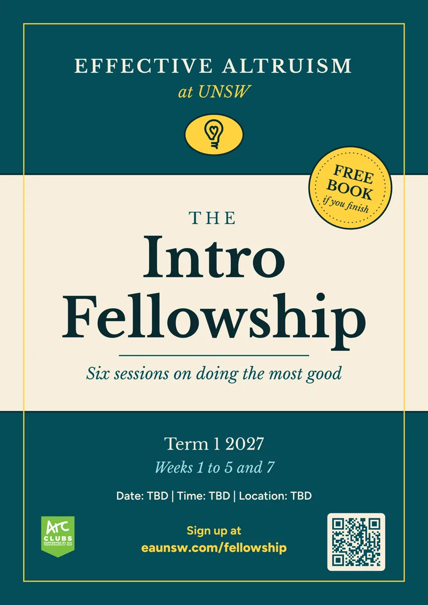

What will the format look like?
Once a week you'll sit down with the same small group and talk through one big idea. Before each session there are two short readings, so everyone comes in with something to say.
It's a conversation, not a lecture. Nobody expects you to know the answers, and disagreeing is half the fun.
Week 6 is a break, and Week 7 is a careers night. Come to 5 of the 6 sessions and you'll take home a certificate and a free book.
What we'll read and argue about
Session 1, Week 1The effectiveness mindset
Why does how you help matter so much?2 things to try inside
Every year, migrating birds land on open oil ponds and drown. Nets over the ponds would save 20,000 birds. How much would you chip in?
A hundred times the birds. About the same money.
What three separate groups offered in a 1992 study (Desvousges and others), each asked about one flock.
You want to help people who are blind. Where should the money go?
50
people could see again
Fred Hollows Foundationor
The same $50,000 buys either 1 guide dog or cures blindness in 1,000 people
$50 per operation, double the lowest figure from the Fred Hollows Foundation, to be conservative. $50,000 per guide dog, from Guide Dogs Australia.
Read these two
Extras, if you want more
Session 2, Week 2Differences in impact
How much better is the best option?2 things to try inside
Twenty health programs each get $1,000. Drag to pick one.
5 healthy years of life
Twenty made-up programs with the same spread as 108 real ones: 0.02 to 300 healthy years per $1,000, with 5 in the middle. From Toby Ord, 2013.
Where does a student budget sit among everyone on Earth?
Richer than 85% of the world
Rough estimate from World Bank data, 2024, adjusted for purchasing power.
Read these two
Extras, if you want more
Session 3, Week 3Radical empathy
Who counts?1 thing to try inside
Whose wellbeing counts? Tap a ring to set where your circle ends.
Inside your circle
Counts are rough: ABS and UN for people, Our World in Data for farmed animals, and the Smithsonian for insects.
Read these two
Extras, if you want more
Session 4, Week 4The long view
What do we owe people who don't exist yet?2 things to try inside
How much longer do you think humanity will last?
1,000 more years
A simple sum, not a forecast: about 132 million births a year (UN, 2024), the same as now, for as long as you choose. About 117 billion people have lived so far (PRB, 2022).
Suppose each century carries some chance of a catastrophe we never recover from. How big?
1 in 6 each century
Chance we are still here in
1 in 6 is Toby Ord's estimate for this century, in The Precipice (2020). The sum assumes the same risk every century.
Read these two
Extras, if you want more
Session 5, Week 5What might we be missing?
What if we're wrong?1 thing to try inside
You can't be certain which view is right. How much weight would you give each?
If you back only your favourite
If you split by how sure you are
Splitting like this is called worldview diversification. Open Philanthropy wrote about why it gives this way.
Read these two
Extras, if you want more
Session 6, Week 7Careers night
What will you do with your 80,000 hours?4 things to try inside
A career is about 80,000 hours. How much of yours could go to a problem you care about?
8,000 hours
Each dot is 1,000 hours: 40 years, 50 weeks a year, 40 hours a week.
80,000 hours is a lot. Which problem should get them?
Three questions
When all three overlap, that is where an extra hour of your time has the most impact on the world.
MalariaWild animal sufferingHeart diseaseWikipedia typosWorld peaceCounting all the sandDonating to HarvardMario 64 speedrunsOften called scale, neglectedness, and tractability. See 80,000 Hours' post.
Or give money, not hours. What could 10% of your pay do?
$6,000given each year
31,000bed nets over a 40-year career
28lives saved, roughly (GiveWell)
And you would still be richer than 99% of the world.
Rough sums: the same pay for 40 years, A$1 = US$0.65, about US$5 per bed net delivered and about US$5,500 per life saved (GiveWell). The 10% Pledge is run by Giving What We Can.
Stamp the sessions you reckon you'll make.
Five stamps gets you the certificate and the book.
Effective Altruism UNSW
Intro Fellowship, Term 1 2027
Your name here
turned up, read things, and argued kindly.
Only a preview. The real one is on paper.
Read these two
Extras, if you want more
- Opportunities80,000 Hours job boardRoles working on big problems.
- OpportunitiesProbably GoodCareer advice across many paths.
- OpportunitiesAnimal Advocacy CareersIf you lean towards animals.
- OpportunitiesEAGxAustralasiaThe big annual conference near us.
Finish, and take a book home
Come to 5 of the 6 sessions for a certificate and a free book from our library.
Quick answers
Do I need any background?
No. If you're curious and like talking ideas through, you're qualified.
How much work is it?
Two short readings and one session a week. No essays, no marks.
What if I miss a week?
You can miss one session and still get your certificate and book.
Can I come to events without doing the fellowship?
Yes. Events are separate, and you're welcome at all of them.